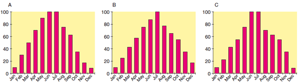
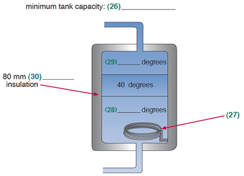

Part 1
Questions 1-5Listen from here
Complete the form below.
Write NO MORE THAN TWO WORDS AND/OR A NUMBER for each answer.
Name: William 1 Address: 10 2 Nelson Contact number: 07 3 Payment by credit card type: 4 card. Card No. 4550 1392 8309 3221 Card expiry date: July 20XX Rental period: 5 days |
Questions 6-10Listen from here
Answer the following questions USING NO MORE THAN TWO WORDS OR A NUMBER
How much is the car per day?
6
What does the price include?
7
Who will he be visiting?
8
What kind of car does the agent recommend?
9
What does he need to collect the car?
10
Part 2
Questions 11-15Listen from here
Complete the tables below. If there is no information given, write X.
Write NO MORE THAN TWO WORDS AND/OR A NUMBER for each answer.
| Overlander | |
| Distance / km | 11 |
| Highlight | 3 volcanoes |
| Time / hours | 11 |
| Transalpine | |
| Distance / km | 223 |
| Highlight | 16 12 |
| Time / hours | 13 |
| Transcoastal | |
| Distance / km | 14 |
| Highlight | 15 |
| Time / hours | 5 |
Questions 16-20Listen from here
Complete the summary below USING NO MORE THAN TWO WORDS OR A NUMBER.
Taking three days to complete, the 16 is one of the world’s longest train journeys. The Ghan is shorter, passing through towns built by the 17 There is also a sculpture designed to mark the laying of the 18 concrete sleeper. The Overland was the first train to travel between the capital cities in two 19 and it is also the oldest journey of its kind on 20 |
Part 3
Questions 21-25Listen from here
Circle the correct letter A–C.

Questions 26-30Listen from here
Label the following diagram USING NO MORE THAN TWO WORDS AND / OR A NUMBER

26
27
28
29
30
Part 4
Questions 31-40Listen from here
Complete the sentences below using NO MORE THAN TWO WORDS OR A NUMBER
Lecture on 31 Examples: tourism and 32 Common misconception is that marketing points to 33 in what is being provided. Marketing is actually essential in maintaining 34 Selling a product is easier because it is 35 and customers do not have such different 36 Aim: offer service beyond hopes of 37 Important to: (a) keep informed & (b) 38 One way to achieve this: 39 40 must always be available for any queries or problems. |